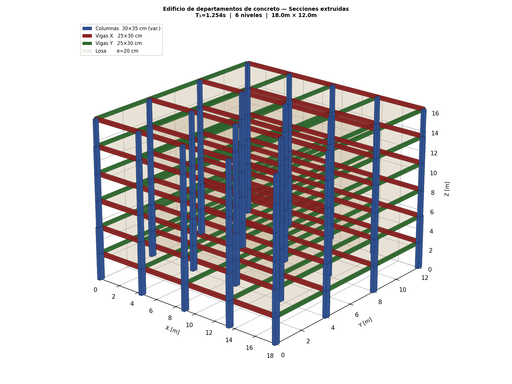
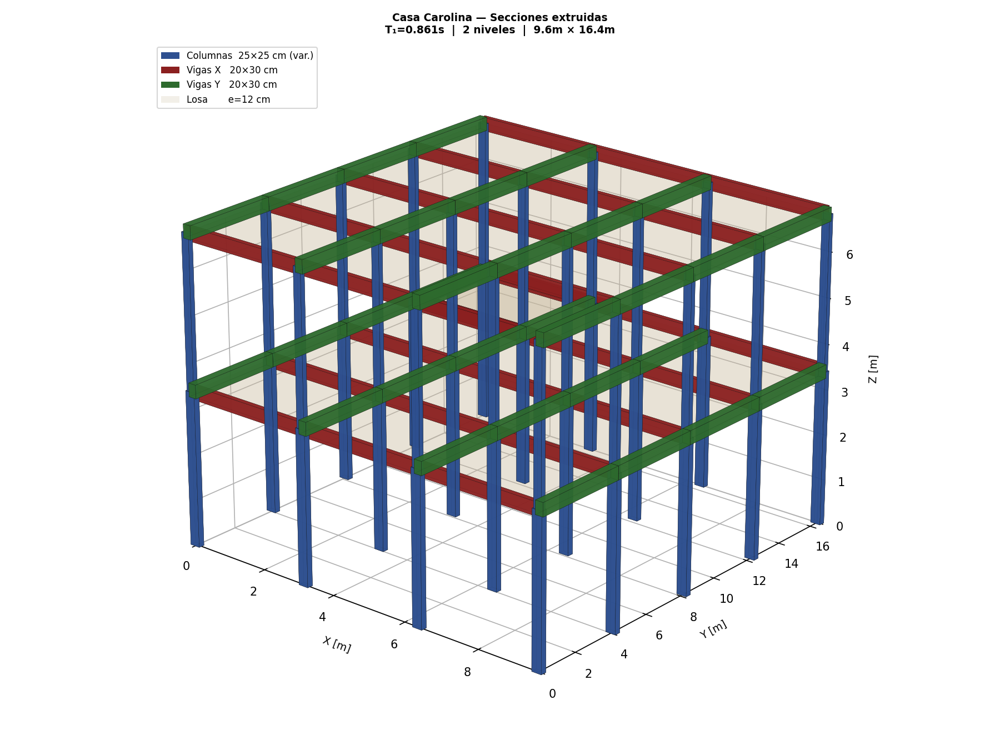
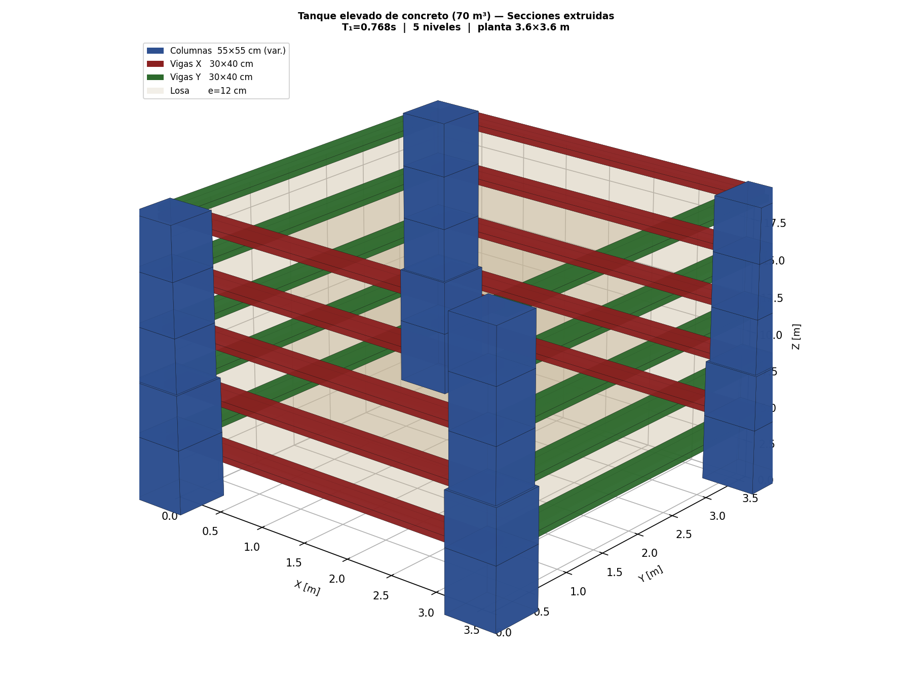

Ingeniería estructural enfocada en estructuras de concreto reforzado: análisis y diseño optimizado conforme a la normativa mexicana (CFE y NTC-2023). A continuación, una selección de proyectos, cada uno con su modelo 3D verificable.
Toca Ver en 3D para explorar el modelo, o escanea el QR para abrirlo en tu celular.


